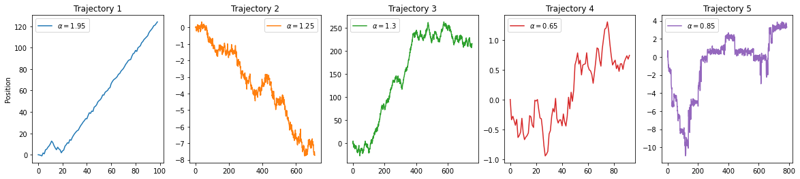
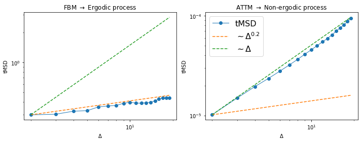
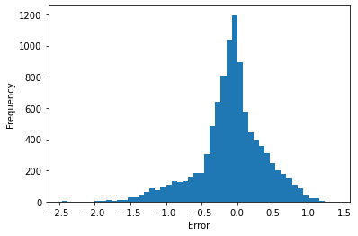
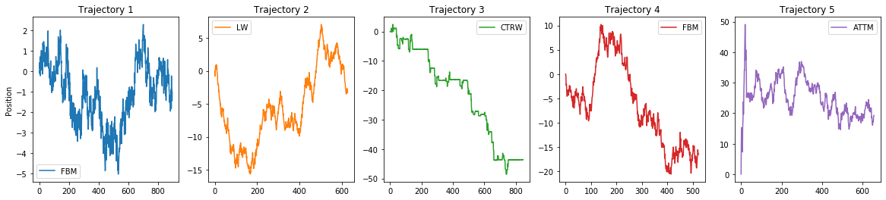
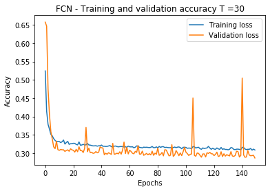
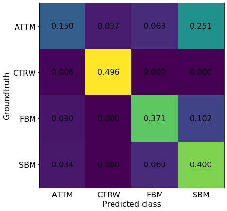

import numpy as np
import matplotlib.pyplot as plt2. Create submissions
The best way of dealing with the available datasets is by means of the andi-datasets python package, which can be installed using pip install andi-datasets. Then, the dataset can be created from the function challenge_2020_dataset, allocated in the datasets_theory module.
from andi_datasets.datasets_challenge import challenge_2020_datasetFor this tutorial, I have first downloaded the datasets available in the Challenge webpage (www.andi-challenge.org). Note that you need to register before being able to access the data. You will have access to two datasets, one for training, which is labeled, and one for scoring, which is used to rank the participants in the competition. In this case, I downloaded each of the datasets in the following folders:
path_datasets = 'datasets/'To load the training dataset, we only need to do:
X1, Y1, X2, Y2, X3, Y3 = challenge_2020_dataset(load_dataset = True, path_datasets = path_datasets)Creating a dataset for task(s) [1, 2, 3] and dimension(s) [1, 2, 3].In the case you are working with a validation dataset, and do not have the labels (in this case stored in the files refX.txt), you can use the optional parameter load_labels = False, as follows:
validation = challenge_2020_dataset(load_dataset = True, path_datasets = path_datasets, load_labels = False)Creating a dataset for task(s) [1, 2, 3] and dimension(s) [1, 2, 3].Task 1 - Anomalous exponent prediction
X1 contains the trajectories for task 1. As we asked for all dimensions, X1 will be a list of three elements, each element one dimension. The same for the labels Y1. Let us check the 1D case:
X1_1D = X1[0]
Y1_1D = Y1[0]fig, ax = plt.subplots(1, 5, figsize = (20, 4))
for idx, (t, l) in enumerate(zip(X1_1D[:5], Y1_1D[:5])):
ax[idx].plot(t, label = r'$\alpha =$'+str(l), c = 'C'+str(idx))
ax[idx].legend()
ax[idx].set_title(f'Trajectory {idx+1}')
ax[0].set_ylabel('Position');
The ‘good old’ way: the tMSD fitting
One way to extract the anomalous exponent is by fitting the tMSD: \[ \mbox{tMSD}(\Delta) = \frac{1}{T-\Delta} \sum_{i=1}^{T-\Delta}(x(t_i + \Delta)-x(t_i))^2, \] where \(\Delta\) is defined as the time lag and \(T\) is length of the trajectory.
def TMSD(traj, t_lags):
ttt = np.zeros_like(t_lags, dtype= float)
for idx, t in enumerate(t_lags):
for p in range(len(traj)-t):
ttt[idx] += (traj[p]-traj[p+t])**2
ttt[idx] /= len(traj)-t
return tttWe know that (usually) \[\mbox{tMSD}(\Delta) \sim \Delta ^ \alpha,\] hence we can use it to extract the anomalous exponent. Let us check this on trajectories from two models: ATTM and FBM. For that we can again use the andi package, and access the diffusion models directly:
from andi.models_theory import models_theory
MT = models_theory()
# We create one ATTM and one FBM trajectory with alpha = 0.2
attm = MT._oneD().attm(T = 1000, alpha = 0.2)
fbm = MT._oneD().fbm(T = 1000, alpha = 0.2)
# We calculate their tMSD
t_lags = np.arange(2, 20)
attm_tmsd = TMSD(attm, t_lags = t_lags)
fbm_tmsd = TMSD(fbm, t_lags = t_lags)Let’s plot the tMSD:
fig, ax = plt.subplots(1,2, figsize = (10, 4))
ax[0].loglog(t_lags, fbm_tmsd, '-o', lw = 1)
ax[0].loglog(t_lags, t_lags**0.2/(t_lags[0]**0.2)*fbm_tmsd[0], ls = '--')
ax[0].loglog(t_lags, t_lags/(t_lags[0])*fbm_tmsd[0], ls = '--')
ax[0].set_title(r'FBM $\rightarrow$ Ergodic process')
ax[1].loglog(t_lags, attm_tmsd, '-o', lw = 1,label = 'tMSD')
ax[1].loglog(t_lags, t_lags**0.2/(t_lags[0]**0.2)*attm_tmsd[0], ls = '--', label = r'$\sim \Delta^{0.2}$')
ax[1].loglog(t_lags, t_lags/(t_lags[0])*attm_tmsd[0], ls = '--', label = r'$\sim \Delta$')
ax[1].set_title(r'ATTM $\rightarrow$ Non-ergodic process')
ax[1].legend(fontsize = 16)
plt.setp(ax, xlabel = r'$\Delta$', ylabel = 'tMSD');
fig.tight_layout()
We see that the tMSD works very well for ergodic processes, but fails horribly for non-ergodic, for which we usually have that \(tMSD\sim\Delta\). Nevertheless, let’s use it to fit the exponent of the 1D training dataset:
t_lags = np.arange(2,10)
predictions = []
for traj in X1[0]:
tmsd = TMSD(traj, t_lags)
predictions.append(np.polyfit(np.log(t_lags), np.log(tmsd),1)[0])
print('MAE = '+str(np.round(np.mean(np.abs(np.array(predictions)-Y1[0])), 4)))MAE = 0.3342Let’s see how is the error distributed:
plt.hist(np.array(predictions)-Y1[0], bins = 50);
plt.xlabel('Error')
plt.ylabel('Frequency')Text(0, 0.5, 'Frequency')
We can now use the same method to predict the exponent of the validation dataset V1, for 1D
t_lags = np.arange(1,10)
predictions_task1_1d = []
for traj in validation[0][0]:
tmsd = TMSD(traj, t_lags)
predictions_task1_1d.append(np.polyfit(np.log(t_lags), np.log(tmsd),1)[0])To make a submission, you only need to write a .txt file for which: - The name is the task: task1.txt, task2.txt, task3.txt - The first column is the dimension (1,2 or 3) - The following columns are the results - Delimiter should be ;
pred_to_txt = np.ones((len(predictions_task1_1d), 2))
pred_to_txt[:, 1] = predictions_task1_1d
np.savetxt('task1.txt', pred_to_txt.astype(float), fmt = '%1.5f', delimiter = ';')Then, we zip it and submit!
Task 2 - Model classification
Let’s check the trajectory for the second task. The structure of the variables X2 and Y2 is just as we explained for the first task. We will focus again in 1D:
X2_1D = X2[0]
Y2_1D = Y2[0]fig, ax = plt.subplots(1, 5, figsize = (20, 4))
for idx, (t, l) in enumerate(zip(X2_1D[:5], Y2_1D[:5])):
ax[idx].plot(t, label = AD().avail_models_name[int(l)].upper(), c = 'C'+str(idx))
ax[idx].legend()
ax[idx].set_title(f'Trajectory {idx+1}')
ax[0].set_ylabel('Position');
The new trend: machine learning
There are various approaches to model classification: statistical tests to differentiate between CTRW and FBM, Bayesian inference,…etc. In this example we will use the latest proposal: Machine Learning.
One of the main difficulties of the ANDI challenge is that we have trajectories of all lengths! Having ML models able to accomodate such feature is one of the main challenges the participants will face.
For the sake of simplicity, I will solve here an easier problem: classifying between the subdiffusive models (ATTM, FBM, CTRW, SBM), with exponents \(\in \ [0.1, 1]\), with trajectories of all \(30\) points. To generate such dataset, I can use another function from the andi-datasets package: create_dataset from the datasets_theory class. You can check all the details of this function in this tutorial notebook.
from andi_datasets.datasets_theory import datasets_theory
DT = datasets_theory()
# Here I load a dataset that I have already generated. To create a new one, you just new to put load_trajectories = False
# Check the tutorials in the github for all the details
dataset = DT.create_dataset(T = 30, N_models = 1000, exponents = np.arange(0.1,1,0.05), models = [0,1,2,4],
load_trajectories = True, path = '/home/gmunoz/andi_data/datasets/')As usually done in Machine Learning, we shuffle and create trainina/test set with 80-20% ratios:
np.random.shuffle(dataset)
ratio = int(0.8*dataset.shape[0])
# We normalize the trajectories so all of them are in the same 'scale'
from andi.utils_trajectories import normalize
X_a = andi.normalize(dataset[:ratio, 2:]).reshape(ratio, T, 1)
X_e = andi.normalize(dataset[ratio:, 2:]).reshape(N-ratio, T, 1)
dataset[dataset[:,0] == 4, 0] = 3
Y_a = to_categorical(dataset[:ratio, 0])
Y_e = to_categorical(dataset[ratio:, 0])(14400, 30, 1)We import the necessary packages for creating our neural network:
from keras.models import Sequential, load_model
from keras.layers import Dense, Conv1D, Dropout, BatchNormalization, Flatten
from keras.regularizers import l2 as regularizer_l2
from keras.optimizers import AdamNow let’s create a typical Convolutional neural network with keras, with some L2 regularizers and Dropout and Batch Normalization layers.
model = Sequential()
# Here we define the architecture of the Neural Network
model.add(Conv1D(filters=3, kernel_size=3 ,strides=1,
input_shape=(T, 1),
kernel_initializer= 'uniform',
activation= 'relu', kernel_regularizer = regularizer_l2(l = 0.001)))
model.add(BatchNormalization(axis=-1, momentum=0.99, epsilon=0.001))
model.add(Conv1D(filters=8, kernel_size=5 ,strides=1,
kernel_initializer= 'uniform',
activation= 'relu', kernel_regularizer = regularizer_l2(l = 0.001)))
model.add(BatchNormalization(axis=-1, momentum=0.99, epsilon=0.001))
model.add(Conv1D(filters=3, kernel_size=2 ,strides=1,
kernel_initializer= 'uniform',
activation= 'relu', kernel_regularizer = regularizer_l2(l = 0.001)))
model.add(BatchNormalization(axis=-1, momentum=0.99, epsilon=0.001))
model.add(Flatten())
model.add(Dropout(0.5))
model.add(Dense(64*2, activation='sigmoid', kernel_regularizer = regularizer_l2(l = 0.001)))
model.add(BatchNormalization(axis=-1, momentum=0.99, epsilon=0.001))
model.add(Dropout(0.5))
model.add(Dense(64, activation='sigmoid'))
model.add(BatchNormalization(axis=-1, momentum=0.99, epsilon=0.001))
# Last layer needs to have same size as number of processes
number_process = 4
model.add(Dense(number_process, activation='softmax'))
# We add loss function + Adam optimizer
model.compile(loss='binary_crossentropy',
optimizer=Adam(),
metrics=['accuracy'])Let’s train the model:
batch_size = 200
epochs = 150
history = model.fit(X_a, Y_a,
batch_size=batch_size,
epochs=epochs,
verbose=2,
validation_data=(X_e, Y_e))
model.save('model_classification_subdiffusive.h5')Train on 57600 samples, validate on 14400 samples
Epoch 1/150
- 5s - loss: 0.5244 - accuracy: 0.7870 - val_loss: 0.6578 - val_accuracy: 0.7500
Epoch 2/150
- 4s - loss: 0.4146 - accuracy: 0.8187 - val_loss: 0.6470 - val_accuracy: 0.7402
Epoch 3/150
- 3s - loss: 0.3785 - accuracy: 0.8263 - val_loss: 0.4752 - val_accuracy: 0.7945
Epoch 4/150
- 4s - loss: 0.3654 - accuracy: 0.8290 - val_loss: 0.4057 - val_accuracy: 0.8157
Epoch 5/150
- 4s - loss: 0.3511 - accuracy: 0.8332 - val_loss: 0.3586 - val_accuracy: 0.8340
Epoch 6/150
- 3s - loss: 0.3471 - accuracy: 0.8351 - val_loss: 0.3385 - val_accuracy: 0.8392
Epoch 7/150
- 4s - loss: 0.3395 - accuracy: 0.8380 - val_loss: 0.3169 - val_accuracy: 0.8479
Epoch 8/150
- 4s - loss: 0.3346 - accuracy: 0.8406 - val_loss: 0.3121 - val_accuracy: 0.8524
Epoch 9/150
- 3s - loss: 0.3311 - accuracy: 0.8421 - val_loss: 0.3325 - val_accuracy: 0.8401
Epoch 10/150
- 4s - loss: 0.3319 - accuracy: 0.8413 - val_loss: 0.3093 - val_accuracy: 0.8509
Epoch 11/150
- 4s - loss: 0.3314 - accuracy: 0.8418 - val_loss: 0.3074 - val_accuracy: 0.8524
Epoch 12/150
- 3s - loss: 0.3286 - accuracy: 0.8427 - val_loss: 0.3098 - val_accuracy: 0.8501
Epoch 13/150
- 2s - loss: 0.3309 - accuracy: 0.8420 - val_loss: 0.3088 - val_accuracy: 0.8518
Epoch 14/150
- 2s - loss: 0.3356 - accuracy: 0.8399 - val_loss: 0.3089 - val_accuracy: 0.8519
Epoch 15/150
- 4s - loss: 0.3245 - accuracy: 0.8447 - val_loss: 0.3044 - val_accuracy: 0.8540
Epoch 16/150
- 3s - loss: 0.3288 - accuracy: 0.8427 - val_loss: 0.3072 - val_accuracy: 0.8522
Epoch 17/150
- 4s - loss: 0.3319 - accuracy: 0.8416 - val_loss: 0.3087 - val_accuracy: 0.8508
Epoch 18/150
- 4s - loss: 0.3237 - accuracy: 0.8450 - val_loss: 0.3048 - val_accuracy: 0.8534
Epoch 19/150
- 4s - loss: 0.3255 - accuracy: 0.8445 - val_loss: 0.3117 - val_accuracy: 0.8490
Epoch 20/150
- 4s - loss: 0.3257 - accuracy: 0.8443 - val_loss: 0.3086 - val_accuracy: 0.8512
Epoch 21/150
- 3s - loss: 0.3266 - accuracy: 0.8440 - val_loss: 0.3075 - val_accuracy: 0.8525
Epoch 22/150
- 4s - loss: 0.3264 - accuracy: 0.8438 - val_loss: 0.3026 - val_accuracy: 0.8560
Epoch 23/150
- 4s - loss: 0.3234 - accuracy: 0.8460 - val_loss: 0.3101 - val_accuracy: 0.8514
Epoch 24/150
- 4s - loss: 0.3223 - accuracy: 0.8466 - val_loss: 0.3036 - val_accuracy: 0.8531
Epoch 25/150
- 4s - loss: 0.3303 - accuracy: 0.8427 - val_loss: 0.3171 - val_accuracy: 0.8473
Epoch 26/150
- 4s - loss: 0.3215 - accuracy: 0.8468 - val_loss: 0.3066 - val_accuracy: 0.8532
Epoch 27/150
- 3s - loss: 0.3219 - accuracy: 0.8457 - val_loss: 0.3066 - val_accuracy: 0.8514
Epoch 28/150
- 4s - loss: 0.3239 - accuracy: 0.8452 - val_loss: 0.3014 - val_accuracy: 0.8575
Epoch 29/150
- 4s - loss: 0.3219 - accuracy: 0.8470 - val_loss: 0.3125 - val_accuracy: 0.8499
Epoch 30/150
- 3s - loss: 0.3225 - accuracy: 0.8461 - val_loss: 0.3702 - val_accuracy: 0.8294
Epoch 31/150
- 2s - loss: 0.3262 - accuracy: 0.8450 - val_loss: 0.3037 - val_accuracy: 0.8542
Epoch 32/150
- 4s - loss: 0.3222 - accuracy: 0.8465 - val_loss: 0.3134 - val_accuracy: 0.8510
Epoch 33/150
- 3s - loss: 0.3216 - accuracy: 0.8467 - val_loss: 0.3010 - val_accuracy: 0.8572
Epoch 34/150
- 4s - loss: 0.3206 - accuracy: 0.8478 - val_loss: 0.3023 - val_accuracy: 0.8550
Epoch 35/150
- 4s - loss: 0.3196 - accuracy: 0.8477 - val_loss: 0.2991 - val_accuracy: 0.8566
Epoch 36/150
- 3s - loss: 0.3197 - accuracy: 0.8477 - val_loss: 0.3001 - val_accuracy: 0.8576
Epoch 37/150
- 4s - loss: 0.3201 - accuracy: 0.8470 - val_loss: 0.3039 - val_accuracy: 0.8560
Epoch 38/150
- 4s - loss: 0.3187 - accuracy: 0.8483 - val_loss: 0.3007 - val_accuracy: 0.8572
Epoch 39/150
- 4s - loss: 0.3200 - accuracy: 0.8475 - val_loss: 0.3024 - val_accuracy: 0.8569
Epoch 40/150
- 4s - loss: 0.3199 - accuracy: 0.8477 - val_loss: 0.3166 - val_accuracy: 0.8492
Epoch 41/150
- 3s - loss: 0.3218 - accuracy: 0.8473 - val_loss: 0.3144 - val_accuracy: 0.8480
Epoch 42/150
- 4s - loss: 0.3185 - accuracy: 0.8486 - val_loss: 0.3139 - val_accuracy: 0.8473
Epoch 43/150
- 4s - loss: 0.3186 - accuracy: 0.8481 - val_loss: 0.2953 - val_accuracy: 0.8595
Epoch 44/150
- 3s - loss: 0.3180 - accuracy: 0.8488 - val_loss: 0.2994 - val_accuracy: 0.8583
Epoch 45/150
- 4s - loss: 0.3182 - accuracy: 0.8488 - val_loss: 0.2968 - val_accuracy: 0.8581
Epoch 46/150
- 2s - loss: 0.3193 - accuracy: 0.8476 - val_loss: 0.3008 - val_accuracy: 0.8561
Epoch 47/150
- 2s - loss: 0.3204 - accuracy: 0.8477 - val_loss: 0.2987 - val_accuracy: 0.8558
Epoch 48/150
- 4s - loss: 0.3174 - accuracy: 0.8495 - val_loss: 0.2963 - val_accuracy: 0.8597
Epoch 49/150
- 5s - loss: 0.3170 - accuracy: 0.8487 - val_loss: 0.3264 - val_accuracy: 0.8434
Epoch 50/150
- 4s - loss: 0.3187 - accuracy: 0.8490 - val_loss: 0.2968 - val_accuracy: 0.8581
Epoch 51/150
- 4s - loss: 0.3192 - accuracy: 0.8483 - val_loss: 0.2976 - val_accuracy: 0.8597
Epoch 52/150
- 4s - loss: 0.3177 - accuracy: 0.8491 - val_loss: 0.2996 - val_accuracy: 0.8561
Epoch 53/150
- 4s - loss: 0.3169 - accuracy: 0.8493 - val_loss: 0.2977 - val_accuracy: 0.8579
Epoch 54/150
- 4s - loss: 0.3175 - accuracy: 0.8501 - val_loss: 0.3034 - val_accuracy: 0.8580
Epoch 55/150
- 4s - loss: 0.3179 - accuracy: 0.8492 - val_loss: 0.2970 - val_accuracy: 0.8572
Epoch 56/150
- 4s - loss: 0.3175 - accuracy: 0.8496 - val_loss: 0.3085 - val_accuracy: 0.8523
Epoch 57/150
- 4s - loss: 0.3168 - accuracy: 0.8501 - val_loss: 0.3300 - val_accuracy: 0.8453
Epoch 58/150
- 4s - loss: 0.3172 - accuracy: 0.8493 - val_loss: 0.2985 - val_accuracy: 0.8569
Epoch 59/150
- 4s - loss: 0.3156 - accuracy: 0.8506 - val_loss: 0.3153 - val_accuracy: 0.8484
Epoch 60/150
- 4s - loss: 0.3189 - accuracy: 0.8485 - val_loss: 0.2975 - val_accuracy: 0.8592
Epoch 61/150
- 3s - loss: 0.3171 - accuracy: 0.8491 - val_loss: 0.3077 - val_accuracy: 0.8539
Epoch 62/150
- 2s - loss: 0.3167 - accuracy: 0.8496 - val_loss: 0.3044 - val_accuracy: 0.8539
Epoch 63/150
- 4s - loss: 0.3172 - accuracy: 0.8488 - val_loss: 0.2994 - val_accuracy: 0.8580
Epoch 64/150
- 3s - loss: 0.3143 - accuracy: 0.8507 - val_loss: 0.2979 - val_accuracy: 0.8574
Epoch 65/150
- 4s - loss: 0.3159 - accuracy: 0.8500 - val_loss: 0.3046 - val_accuracy: 0.8561
Epoch 66/150
- 4s - loss: 0.3196 - accuracy: 0.8486 - val_loss: 0.3017 - val_accuracy: 0.8551
Epoch 67/150
- 4s - loss: 0.3187 - accuracy: 0.8485 - val_loss: 0.3205 - val_accuracy: 0.8495
Epoch 68/150
- 4s - loss: 0.3154 - accuracy: 0.8506 - val_loss: 0.2971 - val_accuracy: 0.8579
Epoch 69/150
- 4s - loss: 0.3151 - accuracy: 0.8512 - val_loss: 0.2971 - val_accuracy: 0.8592
Epoch 70/150
- 3s - loss: 0.3140 - accuracy: 0.8510 - val_loss: 0.3051 - val_accuracy: 0.8550
Epoch 71/150
- 4s - loss: 0.3161 - accuracy: 0.8501 - val_loss: 0.2938 - val_accuracy: 0.8603
Epoch 72/150
- 4s - loss: 0.3155 - accuracy: 0.8509 - val_loss: 0.2961 - val_accuracy: 0.8602
Epoch 73/150
- 3s - loss: 0.3159 - accuracy: 0.8498 - val_loss: 0.2990 - val_accuracy: 0.8581
Epoch 74/150
- 4s - loss: 0.3154 - accuracy: 0.8508 - val_loss: 0.2952 - val_accuracy: 0.8597
Epoch 75/150
- 4s - loss: 0.3149 - accuracy: 0.8512 - val_loss: 0.2982 - val_accuracy: 0.8591
Epoch 76/150
- 4s - loss: 0.3155 - accuracy: 0.8505 - val_loss: 0.2949 - val_accuracy: 0.8606
Epoch 77/150
- 3s - loss: 0.3179 - accuracy: 0.8495 - val_loss: 0.3051 - val_accuracy: 0.8532
Epoch 78/150
- 3s - loss: 0.3147 - accuracy: 0.8513 - val_loss: 0.2938 - val_accuracy: 0.8601
Epoch 79/150
- 3s - loss: 0.3147 - accuracy: 0.8508 - val_loss: 0.2997 - val_accuracy: 0.8584
Epoch 80/150
- 4s - loss: 0.3169 - accuracy: 0.8498 - val_loss: 0.2966 - val_accuracy: 0.8597
Epoch 81/150
- 4s - loss: 0.3141 - accuracy: 0.8503 - val_loss: 0.3137 - val_accuracy: 0.8490
Epoch 82/150
- 4s - loss: 0.3181 - accuracy: 0.8492 - val_loss: 0.2938 - val_accuracy: 0.8609
Epoch 83/150
- 4s - loss: 0.3155 - accuracy: 0.8505 - val_loss: 0.2962 - val_accuracy: 0.8601
Epoch 84/150
- 3s - loss: 0.3173 - accuracy: 0.8490 - val_loss: 0.3018 - val_accuracy: 0.8548
Epoch 85/150
- 4s - loss: 0.3174 - accuracy: 0.8496 - val_loss: 0.2923 - val_accuracy: 0.8619
Epoch 86/150
- 4s - loss: 0.3150 - accuracy: 0.8500 - val_loss: 0.3091 - val_accuracy: 0.8556
Epoch 87/150
- 3s - loss: 0.3158 - accuracy: 0.8504 - val_loss: 0.3082 - val_accuracy: 0.8545
Epoch 88/150
- 4s - loss: 0.3151 - accuracy: 0.8511 - val_loss: 0.3004 - val_accuracy: 0.8587
Epoch 89/150
- 4s - loss: 0.3145 - accuracy: 0.8511 - val_loss: 0.2922 - val_accuracy: 0.8614
Epoch 90/150
- 3s - loss: 0.3149 - accuracy: 0.8508 - val_loss: 0.2940 - val_accuracy: 0.8599
Epoch 91/150
- 4s - loss: 0.3132 - accuracy: 0.8523 - val_loss: 0.3229 - val_accuracy: 0.8477
Epoch 92/150
- 3s - loss: 0.3151 - accuracy: 0.8505 - val_loss: 0.2908 - val_accuracy: 0.8624
Epoch 93/150
- 2s - loss: 0.3164 - accuracy: 0.8501 - val_loss: 0.2949 - val_accuracy: 0.8609
Epoch 94/150
- 2s - loss: 0.3148 - accuracy: 0.8511 - val_loss: 0.3067 - val_accuracy: 0.8551
Epoch 95/150
- 4s - loss: 0.3161 - accuracy: 0.8498 - val_loss: 0.3004 - val_accuracy: 0.8574
Epoch 96/150
- 4s - loss: 0.3167 - accuracy: 0.8503 - val_loss: 0.2928 - val_accuracy: 0.8610
Epoch 97/150
- 4s - loss: 0.3150 - accuracy: 0.8508 - val_loss: 0.3004 - val_accuracy: 0.8580
Epoch 98/150
- 4s - loss: 0.3116 - accuracy: 0.8521 - val_loss: 0.2929 - val_accuracy: 0.8602
Epoch 99/150
- 4s - loss: 0.3157 - accuracy: 0.8505 - val_loss: 0.3035 - val_accuracy: 0.8582
Epoch 100/150
- 4s - loss: 0.3158 - accuracy: 0.8506 - val_loss: 0.3158 - val_accuracy: 0.8476
Epoch 101/150
- 4s - loss: 0.3153 - accuracy: 0.8498 - val_loss: 0.3024 - val_accuracy: 0.8580
Epoch 102/150
- 3s - loss: 0.3130 - accuracy: 0.8520 - val_loss: 0.2985 - val_accuracy: 0.8602
Epoch 103/150
- 4s - loss: 0.3136 - accuracy: 0.8516 - val_loss: 0.2933 - val_accuracy: 0.8605
Epoch 104/150
- 4s - loss: 0.3134 - accuracy: 0.8509 - val_loss: 0.2964 - val_accuracy: 0.8572
Epoch 105/150
- 4s - loss: 0.3121 - accuracy: 0.8512 - val_loss: 0.2975 - val_accuracy: 0.8592
Epoch 106/150
- 4s - loss: 0.3176 - accuracy: 0.8502 - val_loss: 0.4506 - val_accuracy: 0.8130
Epoch 107/150
- 4s - loss: 0.3171 - accuracy: 0.8506 - val_loss: 0.2937 - val_accuracy: 0.8611
Epoch 108/150
- 4s - loss: 0.3136 - accuracy: 0.8519 - val_loss: 0.2912 - val_accuracy: 0.8632
Epoch 109/150
- 4s - loss: 0.3152 - accuracy: 0.8504 - val_loss: 0.3002 - val_accuracy: 0.8585
Epoch 110/150
- 2s - loss: 0.3157 - accuracy: 0.8503 - val_loss: 0.2989 - val_accuracy: 0.8569
Epoch 111/150
- 3s - loss: 0.3119 - accuracy: 0.8523 - val_loss: 0.2939 - val_accuracy: 0.8615
Epoch 112/150
- 4s - loss: 0.3102 - accuracy: 0.8533 - val_loss: 0.2886 - val_accuracy: 0.8641
Epoch 113/150
- 3s - loss: 0.3140 - accuracy: 0.8520 - val_loss: 0.2975 - val_accuracy: 0.8585
Epoch 114/150
- 4s - loss: 0.3124 - accuracy: 0.8522 - val_loss: 0.2976 - val_accuracy: 0.8593
Epoch 115/150
- 4s - loss: 0.3133 - accuracy: 0.8519 - val_loss: 0.2893 - val_accuracy: 0.8635
Epoch 116/150
- 4s - loss: 0.3138 - accuracy: 0.8516 - val_loss: 0.3008 - val_accuracy: 0.8551
Epoch 117/150
- 4s - loss: 0.3183 - accuracy: 0.8494 - val_loss: 0.2989 - val_accuracy: 0.8586
Epoch 118/150
- 4s - loss: 0.3137 - accuracy: 0.8517 - val_loss: 0.3018 - val_accuracy: 0.8577
Epoch 119/150
- 3s - loss: 0.3101 - accuracy: 0.8538 - val_loss: 0.2981 - val_accuracy: 0.8569
Epoch 120/150
- 2s - loss: 0.3133 - accuracy: 0.8523 - val_loss: 0.2976 - val_accuracy: 0.8567
Epoch 121/150
- 2s - loss: 0.3109 - accuracy: 0.8529 - val_loss: 0.2930 - val_accuracy: 0.8607
Epoch 122/150
- 2s - loss: 0.3101 - accuracy: 0.8535 - val_loss: 0.2965 - val_accuracy: 0.8584
Epoch 123/150
- 3s - loss: 0.3139 - accuracy: 0.8516 - val_loss: 0.3024 - val_accuracy: 0.8576
Epoch 124/150
- 4s - loss: 0.3115 - accuracy: 0.8529 - val_loss: 0.2907 - val_accuracy: 0.8611
Epoch 125/150
- 4s - loss: 0.3100 - accuracy: 0.8532 - val_loss: 0.2922 - val_accuracy: 0.8626
Epoch 126/150
- 3s - loss: 0.3153 - accuracy: 0.8517 - val_loss: 0.3035 - val_accuracy: 0.8557
Epoch 127/150
- 3s - loss: 0.3101 - accuracy: 0.8535 - val_loss: 0.2904 - val_accuracy: 0.8624
Epoch 128/150
- 2s - loss: 0.3115 - accuracy: 0.8526 - val_loss: 0.2980 - val_accuracy: 0.8591
Epoch 129/150
- 4s - loss: 0.3098 - accuracy: 0.8536 - val_loss: 0.2916 - val_accuracy: 0.8622
Epoch 130/150
- 4s - loss: 0.3099 - accuracy: 0.8537 - val_loss: 0.2956 - val_accuracy: 0.8584
Epoch 131/150
- 4s - loss: 0.3089 - accuracy: 0.8541 - val_loss: 0.2937 - val_accuracy: 0.8602
Epoch 132/150
- 3s - loss: 0.3103 - accuracy: 0.8531 - val_loss: 0.2922 - val_accuracy: 0.8601
Epoch 133/150
- 4s - loss: 0.3151 - accuracy: 0.8515 - val_loss: 0.3039 - val_accuracy: 0.8567
Epoch 134/150
- 4s - loss: 0.3139 - accuracy: 0.8521 - val_loss: 0.2920 - val_accuracy: 0.8620
Epoch 135/150
- 4s - loss: 0.3099 - accuracy: 0.8528 - val_loss: 0.2908 - val_accuracy: 0.8626
Epoch 136/150
- 4s - loss: 0.3093 - accuracy: 0.8537 - val_loss: 0.2933 - val_accuracy: 0.8631
Epoch 137/150
- 4s - loss: 0.3106 - accuracy: 0.8536 - val_loss: 0.3051 - val_accuracy: 0.8544
Epoch 138/150
- 4s - loss: 0.3107 - accuracy: 0.8530 - val_loss: 0.3040 - val_accuracy: 0.8549
Epoch 139/150
- 4s - loss: 0.3100 - accuracy: 0.8532 - val_loss: 0.2892 - val_accuracy: 0.8628
Epoch 140/150
- 4s - loss: 0.3092 - accuracy: 0.8533 - val_loss: 0.2935 - val_accuracy: 0.8603
Epoch 141/150
- 4s - loss: 0.3157 - accuracy: 0.8509 - val_loss: 0.5051 - val_accuracy: 0.7945
Epoch 142/150
- 4s - loss: 0.3150 - accuracy: 0.8513 - val_loss: 0.2948 - val_accuracy: 0.8604
Epoch 143/150
- 2s - loss: 0.3111 - accuracy: 0.8529 - val_loss: 0.2884 - val_accuracy: 0.8630
Epoch 144/150
- 4s - loss: 0.3094 - accuracy: 0.8537 - val_loss: 0.2892 - val_accuracy: 0.8624
Epoch 145/150
- 4s - loss: 0.3102 - accuracy: 0.8530 - val_loss: 0.3069 - val_accuracy: 0.8549
Epoch 146/150
- 4s - loss: 0.3101 - accuracy: 0.8533 - val_loss: 0.2947 - val_accuracy: 0.8606
Epoch 147/150
- 4s - loss: 0.3125 - accuracy: 0.8525 - val_loss: 0.2926 - val_accuracy: 0.8598
Epoch 148/150
- 5s - loss: 0.3079 - accuracy: 0.8543 - val_loss: 0.2931 - val_accuracy: 0.8595
Epoch 149/150
- 3s - loss: 0.3107 - accuracy: 0.8533 - val_loss: 0.2940 - val_accuracy: 0.8615
Epoch 150/150
- 4s - loss: 0.3084 - accuracy: 0.8529 - val_loss: 0.2865 - val_accuracy: 0.8646acc = history.history['loss']
val_acc = history.history['val_loss']
plt.plot(np.arange(len(history.history['accuracy'])), acc, label='Training loss')
plt.plot(np.arange(len(history.history['accuracy'])), val_acc,label='Validation loss')
plt.title('FCN - Training and validation accuracy T ='+str(T))
plt.xlabel('Epochs')
plt.ylabel('Accuracy')
plt.legend()
plt.show()
In the ANDI challenge, the rank of task 2 is evaluated with the F1 score. Let’s see how well/bad we did (best value is 1). Recall that this is a toy example, as we are not considergin LW.
from sklearn.metrics import f1_score
groundtruth = np.argmax(Y_e, axis = 1)
predictions = np.argmax(model.predict(X_e), axis = 1)
f1_score(groundtruth, predictions, average='micro')0.7168055555555556Not that bad! To analyze a bit more the predictions, we can use the confusion matrix:
from sklearn.metrics import confusion_matrix
conf = confusion_matrix(groundtruth, predictions)/(predictions.shape[0]/2)fig, ax = plt.subplots(figsize = (7,7))
ax.matshow(conf)
for (i, j), z in np.ndenumerate(conf):
ax.text(j, i, '{:0.3f}'.format(z), ha='center', va='center', fontsize = 16)
ax.set_xticklabels(['c','ATTM','CTRW','FBM','SBM'], fontsize = 16)
ax.set_yticklabels(['a','ATTM','CTRW','FBM','SBM'], fontsize = 16)
ax.set_xlabel('Predicted class', fontsize = 16)
ax.set_ylabel('Groundtruth', fontsize = 16)
ax.xaxis.set_ticks_position('bottom')
We see here that the method is not perfect. For instance, it has a very hard time correctly classifying trajectories ATTM trajectories. For CTRW, the job is easier! Take into account that here we are working with trajectories without noise, contrary to what we have in the Challenge.